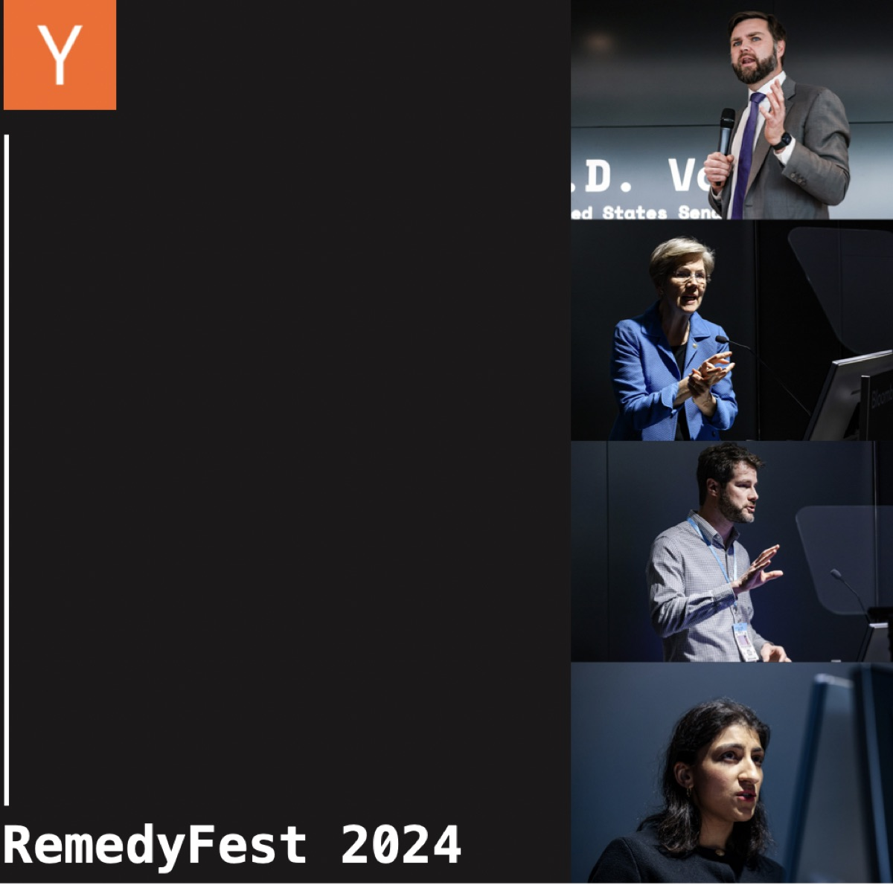
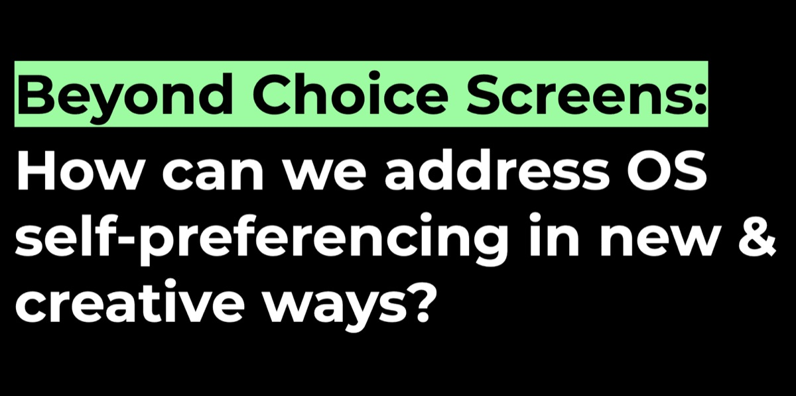
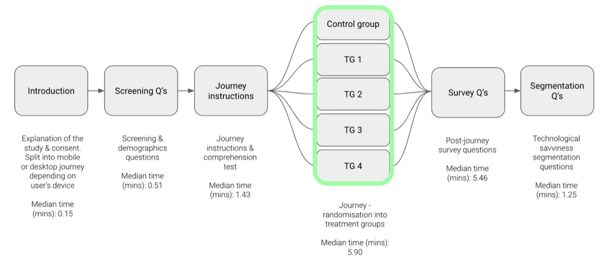

RemedyFest 2024: Remedies & Browser Choice

Last February, I had the privilege of presenting at RemedyFest 2024, a groundbreaking forum that brought together policymakers, technologists, legal experts, and entrepreneurs to discuss remedies for addressing Big Tech's market dominance. As Principal Researcher at Mozilla, I shared insights from our research on browser choice and how we can move beyond traditional choice screens to create more effective solutions.
RemedyFest: At the Intersection of Tech and Policy
RemedyFest 2024, presented by Y Combinator and hosted by Bloomberg Beta in Washington D.C., was a unique event that bridged the worlds of Silicon Valley innovation and policy making. The invite-only gathering featured keynote speakers like Senator J.D. Vance, Senator Elizabeth Warren, FTC Chair Lina Khan, and prominent figures from both sides of the political spectrum.
What made this event particularly special was its practical approach—not just talking about problems, but demonstrating solutions through live technology demonstrations and concrete examples. The event embodied the philosophy of "show, don't tell," giving attendees a tangible sense of what a more competitive tech ecosystem could look like.
Remedies & Browser Choice
My talk, titled "Remedies & Browser Choice," addressed a critical question: How can we address operating system self-preferencing in new and creative ways? As a researcher who has spent years studying how people use the internet in their daily lives, I brought a user-centered perspective to the conversation about competition in the browser market.
The Problem with Browser Choice Screens
At Mozilla, we believe people should have control over their online experiences. However, we compete against OS providers like Google, Apple, and Microsoft, who are incentivized to push their own products, creating barriers for competitors.
Regulators have repeatedly tried to address this through browser choice screens over the years, but these interventions have largely failed to be effective. Yet, they remain regulators' go-to solution.
Bringing Product Development Practices to Policy
Before joining Mozilla's Policy and Legal team, I spent several years leading the Firefox User Research team. This background gave me unique perspective on how we might approach this problem differently.
What surprised me most when transitioning to policy work was discovering that policy interventions often lack the fundamental research and testing that are standard in product development. The tech industry already has the tools to test and refine ideas before they reach consumers—it's time we hold tech policy interventions to the same standard.
Alternatives to Traditional Choice Screens

Working with people throughout our organization—including engineers, designers, product managers, and legal and policy staff—we brainstormed various ideas to give choice to consumers in new ways.
We prototyped and tested some promising concepts:
Play Store Quiz – This helps users find the right browser by having them select what features matter most to them (like device syncing and private browsing), then matching them with appropriate options.
Defaults Tab in Play Store – A dedicated section showing essential app categories where users can easily view their current defaults and set new ones.
Favorites Bar Placement – When users select a new default browser, automatically replacing the old one in the favorites bar to help break habitual use of pre-installed options.
We also explored ideas like shipping devices with generic browser icons, offering two-week trial periods, and providing recommendations based on users' other apps.
Three Key Design Principles for Effective Remedies
From our testing, three important principles emerged:
Timing – Choice should be offered at moments that align with user expectations, like during device setup or major updates.
Informed Choice – Browser choice interventions need to help people make informed choices by explaining what a default is and providing ways to differentiate between options.
Overcoming Inertia – We should make it easier for people to explore and manage default options beyond a single choice moment.
Can Choice Screens Work? Our Data Says Yes

Experiment Design
To answer whether browser choice screens could be effective if properly designed, we conducted a large experiment with 12,000 participants.
We varied designs in four primary ways: when people saw a choice screen, the number of browsers shown, the order of browsers, and the amount of information provided.
The results were clear: well-designed choice screens can be effective. When shown during device setup (rather than when first opening a browser), users were twice as likely to choose an independent browser over the pre-installed default.
According to our research, effective choice screens:
Do not burden consumers
Increase people's satisfaction with device setup
Help people find a default they want to stick with
Increase browser contestability
Align with people's preferences
Perhaps most interestingly, 97% of participants said they would prefer to see a choice screen—including those who weren't shown one during our experiment.
Talk Recording:
Gemma Petrie is Principal Researcher at Mozilla, where she leads research on browser choice and competition. For more information on Mozilla's browser competition research, visit https://research.mozilla.org/browser-competition.